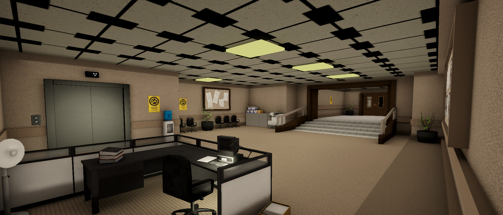
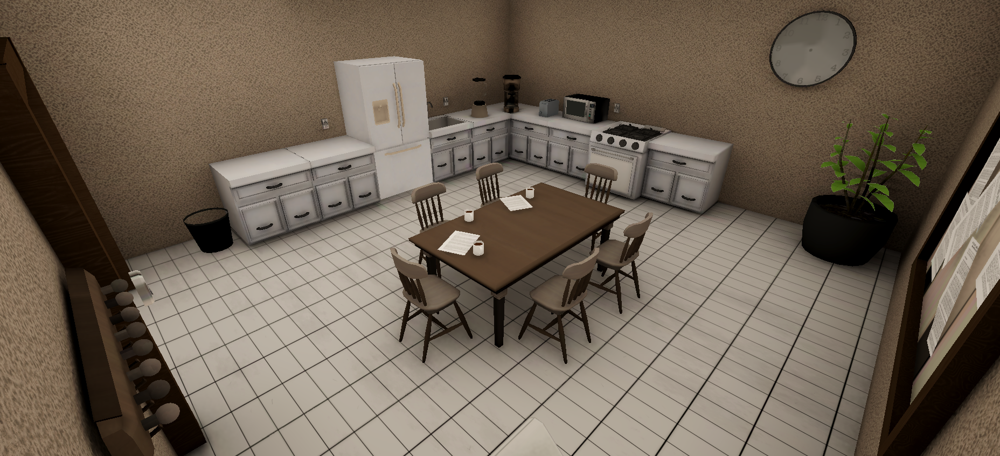
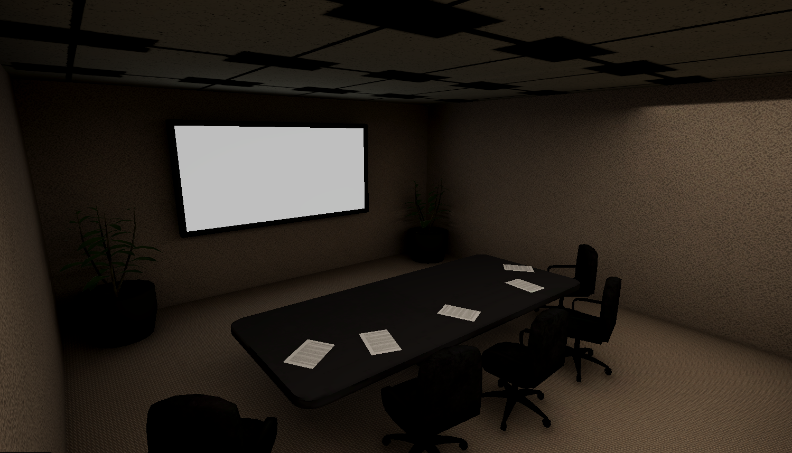
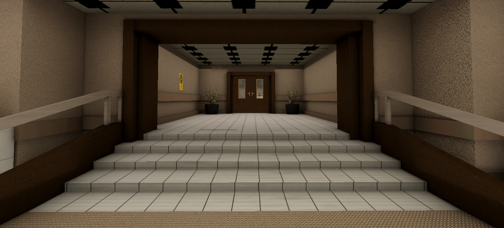
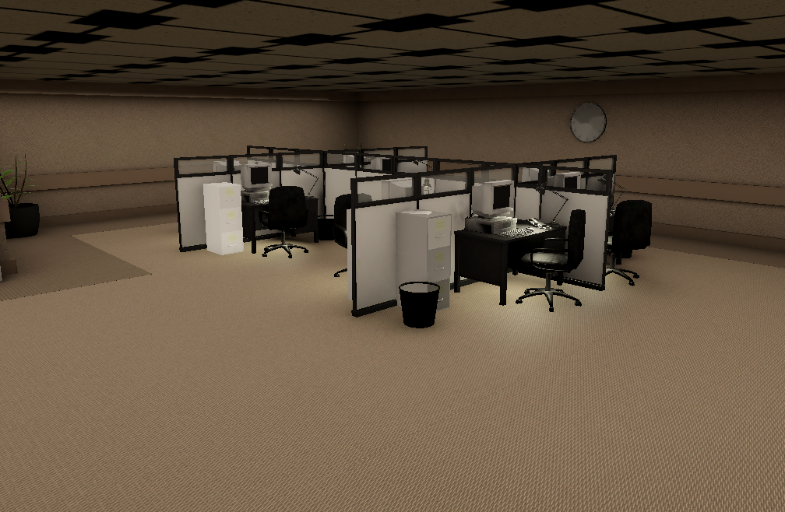
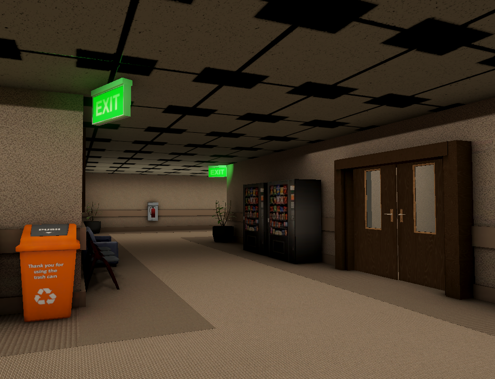

Individual Research Project · University of Greenwich · Unity
Perceptual Pathways
Genre Framing and Player Navigation, Final Year Individual Project · Supervisor: Tom Cole
ResearchLevel DesignPlayer PsychologyUnityC#
A between-subjects study asking a simple question with a complicated answer: does telling a player what genre they're about to play change how they move through a space, when the space itself never changes? Thirty participants explored the same Unity office environment under one of three genre labels, horror, adventure, or none at all, while every interaction and footstep was logged automatically. The label alone was enough to shift arousal, caution, and curiosity in measurable, statistically significant ways.
30Participants, 3 conditions
d = 1.52Effect size, horror vs neutral arousal
2.4×Curiosity-driven interactions, adventure vs horror
0Geometry changes between conditions

The Research Question
Level design communicates before the player ever presses a key. A loading screen, a title, a one-line genre description, all of this primes what a player looks for and what they ignore the moment they gain control. The question behind this project was whether that priming produces measurable differences in how players actually behave inside an identical space, independent of anything the environment itself is doing.
Thirty participants were split into three groups of ten. One was told they were about to play a horror game, one an adventure game, and the third received no framing at all and didn't know the other two conditions existed. All three walked through the exact same Unity office lobby, with identical geometry, lighting, and props. The only variable was the sentence they were given before they picked up the controller.
Theoretical Framework
Four frameworks structured the study, chosen to isolate framing as the only moving part in an otherwise fixed environment.
01
Framing Theory
Tversky & Kahneman (1981). The same situation gets interpreted differently depending on how it's presented. Applied here as genre labels given before play.
02
PAD Model
Mehrabian & Russell (1974). Measures emotion across Pleasure, Arousal, and Dominance, letting the study track emotional response without relying on narrative or mechanics.
03
Spatial Legibility
Lynch (1960). Environments are read through paths, landmarks, edges, and nodes. Kept consistent throughout so framing stayed the only variable.
04
Architectural Communication
Totten (2014). Space carries meaning before narrative or mechanics arrive. Even a minimal environment says something to the player.
Level Showcase
A single Unity environment, reframed by genre. Every participant walked through the same rooms: an entry lobby with vending machines and seating, an open-plan office floor with cubicles and an elevator, side rooms including a kitchen and a conference room, and an S-bend corridor connecting the zones, deliberately built as the key reframing target with blind corners and no line of sight to the goal.
Lobby
The entry point every participant shared. Vending machines, exit signage, and a waiting area sat in an architectural indent off the main path, a deliberate zoning choice to see whether participants would deviate from the shortest route to the goal.

Kitchen
One of the optional side rooms, a dead end by design, entered and exited through the same door. Mundane props like the fridge and dining table were included to ground the space in a recognisable office setting rather than anything genre-coded.

Conference Room
A darker side room used to test whether even minor lighting variation between rooms would bias interpretation on its own. Lighting stayed static and corporate throughout, with no flicker or mood lighting anywhere in the level.

S-Bend Corridor
The connecting passage between zones and the main reframing target. Blind corners removed line of sight to the exit, forcing participants to commit to a path without knowing what was around the turn. Whether they approached with caution or efficiency was one of the clearest behavioural tells in the study.

Office Floor
The open-plan cubicle area participants passed through between the lobby and the side rooms. Identical desks and partitions across every condition kept this zone as neutral, legible filler space rather than a point of interest in itself.

Exit Corridor
The final stretch before the fire exit, vending machines, exit signage, and a recycling bin doing the navigational work diegetically rather than through any HUD or waypoint marker.
Study Design
Horror (n = 10) was told they were about to play a horror game before starting
Adventure (n = 10) was told they were about to play an adventure game before starting
Neutral (n = 10) received no genre framing and wasn't told other conditions existed, serving as a genuine baseline
Between-subjects design with random assignment, sampled by convenience from the Games Design cohort
Procedure: genre priming, free exploration with no objectives or time limit, exit interaction, SAM questionnaire, then open-ended written responses
No scripted events, enemies, audio cues, or narrative beats anywhere in the build, only geometry, lighting, and props that players could assign their own meaning to
Environmental Design
Designing for this study meant the opposite of normal level design instincts: the space had to read as horror, adventure, or neither, depending only on what the player had been told beforehand. Every prop and every architectural decision was stress-tested against one question, does this push the space toward a specific genre reading on its own?
Spatial scaling. Early passes felt like an empty warehouse rather than a corporate lobby. Camera FOV and walking speed were tuned to ground the sense of scale without losing the open space needed to observe exploratory behaviour
Zoning strategy. Assets like the reception desk and waiting area were grouped into an architectural indent off the main route, creating an optional zone to see whether participants would deviate from the shortest path
Narrative anchors. Small human touches, like an Employee of the Month board, kept the space from feeling sterile and doubled as visual distractors to observe in post-session responses
Diegetic navigation only. No arrows, waypoints, or HUD elements. Exit signs, water coolers, and fire extinguishers did the navigational work instead, clustered subtly to draw players toward the exit without them noticing they were being guided
Lighting held flat. Baked lighting kept illumination consistent across the whole level. No flicker, no moody spot-lighting, nothing that could tip the environment toward horror or adventure on its own
Data Capture Systems
All data collection was built directly into the product, since asking participants to self-report movement would have undermined the entire premise of the study.
Player position sampled at fixed intervals throughout every session and stored as coordinate data, later visualised as movement heatmaps
Every interaction with doors, drawers, and the elevator logged automatically with object type, world position, and timestamp, using a layermask-based raycast so new interactables could be added without touching the core logic
A ghost replay system recorded full position and orientation every frame, letting sessions be played back in-engine as a first-person walkthrough, not just plotted as a flat heatmap
Session duration recorded automatically from spawn to the moment a participant interacted with the fire exit
Product Demonstration
A walkthrough of the Unity environment and the ghost replay system, showing the level itself alongside a recorded session played back as a first-person walkthrough.
Findings, Behavioural Data
Adventure-framed participants moved and interacted more than either other group, while horror and neutral behaviour tracked each other closely. That pairing turned out to be the most useful part of the result: horror framing didn't suppress curiosity below a natural baseline, adventure framing actively pulled it upward.
Interactions / minute6.53Horror
Interactions / minute9.18Adventure, significantly higher than both other conditions (p = .038)
Interactions / minute6.25Neutral, nearly identical to Horror
The drawer metric was the single most diagnostic finding in the whole study. Drawers contained nothing, so opening one was a pure measure of curiosity rather than reward-seeking. Adventure participants opened drawers at more than twice the rate of the other two groups, who landed almost exactly on top of each other.
Drawer interactions / session10.3Horror
Drawer interactions / session24.5Adventure, over 2× Horror and Neutral
Drawer interactions / session10.1Neutral
Aggregate movement heatmaps also revealed a qualitative difference in how each group covered similar ground. Horror activity stayed concentrated along corridors and peripheral edges. Adventure produced warmer clusters directly around interactable objects. Neutral movement was sparser and more linear, consistent with passive transit rather than deliberate exploration.
Neutral HeatmapSparser, more linear paths, closer to passive transit than active exploration.
Findings, Emotional Response (SAM)
Arousal and Dominance both followed a clean gradient across the three conditions, measured using the Self-Assessment Manikin against Mehrabian and Russell's Pleasure, Arousal, Dominance model. Pleasure showed no significant difference between groups, which fits an environment with no explicit threat or reward built into it.
t(18) = 3.40, p = .003Horror participants reported significantly higher arousal than Neutral participants, d = 1.52, a very large effect by Cohen's (1988) conventions. Dominance mirrored this in reverse: Horror felt the least in control, Neutral the most.
The tighter spread in Horror responses compared to Adventure was one of the more interesting secondary results. Horror carries a culturally shared set of associations, tension, hypervigilance, threat anticipation, so it anchored interpretation consistently across almost every participant. Adventure is a broader category, covering everything from calm exploration to active excitement, and produced far more individual variation as a result.
Qualitative Highlights
Open-ended responses after each session made the mechanism behind the numbers visible. None of these behaviours were prompted by any mechanic. The genre label was the only thing that changed.
Horror
I wanted to stay close to the walls.
Corner-peeking, wall-hugging, and hesitating at thresholds were common across the Horror group, all self-generated rather than prompted by anything in the level.
Adventure
I felt like I had a job to do or some information to gather.
Explains the elevated drawer rate directly. Objects were treated as sources of information rather than threats.
Neutral
I expected the PCs to turn on, the clock to get hands and start a countdown.
With no frame to read the space through, several Neutral participants started inventing rules that weren't there. 18.2% of the group reached for horror vocabulary unprompted, compared with 10% of Adventure participants.
Tonal Gravity
The most analytically interesting result wasn't something the study set out to test, it surfaced from the data during analysis. Even without any framing, a portion of Neutral participants still read the space as unsettling. That points to something beyond framing alone: the environment carries a pull of its own, and framing can't fully override what a space is already saying before the player is told anything about it.
Institutional emptiness. A corporate lobby with nobody in it reads as post-abandonment by default
Absence of human presence. No NPCs, no signs anyone had just left
The dark server room. An unlit recessed space read as uncertain or threatening regardless of framing
Ambient silence. No incidental audio, which made the emptiness feel heavier across all three conditions
Design Guidelines
Frame for the behaviour you want. If the goal is curious, exploratory play, pre-play framing has to actively push players away from horror's default threat-readiness. Leaving framing neutral just defaults to low curiosity
Don't assume your environment is neutral. Liminal spaces and empty institutional interiors carry horror-adjacent associations before a single word of framing is added. Playtest the environment's baseline tone before treating it as a blank canvas
Horror and adventure aren't equally reliable. Horror produces consistent responses across almost every player. Adventure is broader and produces far more variation, so it needs reinforcement through environment or mechanics if consistency matters
Limitations & Result
The sample (N = 30) was drawn entirely from the Games Design cohort, meaning participants were likely more analytically aware of genre as a construct than a general player base would be. A couple of results sat between p = .05 and .06, treated here as suggestive rather than confirmed, though their effect sizes remained large. Future work would benefit from a larger, non-specialist sample and physiological measures like heart rate or GSR to track the framing effect as it unfolds in real time, rather than only at the end of a session.
First ClassThe project formed the core of my COMP1870 Final Year Individual Project, contributing to a final degree mark of approximately 75.11%, a comfortable First Class Honours.